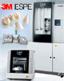
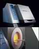

Smile Signature Dental Center
Menu
คลินิกทันตกรรม สไมล์ ซิกเนเจอร์ รอยยิ้มของคุณ ตัวตนของคุณ
สไมล์ ซิกเนเจอร์ สาขาสยามสแควร์ และสไมล์ ซิกเนเจอร์ สาขาพหลโยธิน อยู่ภายใต้การดูแลของ บริษัท เดนทัล คอร์ปอเรชั่น ซึ่งคอยควบคุมดูแลการทำงานของ สไมล์ ซิกเนเจอร์ โดยรวมทั้งหมด ทางคลินิกของเรา
มีทีมทันตแพทย์มากด้วยประสบการณ์ในสาขาต่างๆ
คอยดูแลผุ้เข้ารับบริการโดยเริ่มตั้ง แต่ที่สาขา
พหลโยธิน
ซึ่งเริ่มก่อตั้งขึ้นเป็น
สาขาแรกมาเป็นเวลามากกว่า 10 ปี โดยทันตแพทย์แต่ละท่าน ได้สำเร็จการศึกษา
จากมหาวิทยาลัยที่มีชื่อ
เสียงทั้งในประเทศ และต่า ด้วยสาเหตุนี้ จึงทำให้ทางคลินิกเราสามารถ
ดูแลให้คำแนะนำด้านการรักษาให้กับผู้มารับบริการได้โดยละเอียดเพื่อสร้างความประทับใจให้แก่
ผู้เข้ารับบริการและยังคำนึงถึงความสะดวกสบายรวมทั้งความสะอาดที่จะเกิดขึ้นให้กับผู้เข้ารับบริการ
อีกด้วย นอกเหนือจากประสิทธิภาพการรักษาทางด้านทันตกรรมแล้วนั้นเรายังมีการคัดเลือกทีมงาน
ทั้งประชาสัมพันธ์และผู้ช่วยทันตแพทย์ ที่ผ่านการอบรมทางด้านทันตกรรม และมีมนุษยสัมพันธ์
ที่ดีในการบริการอีกด้วย
สโลแกนของคลินิกทันตกรรม สไมล์ ซิกเนเจอร์
"รอยยิ้มของคุณ คือ ตัวตนของคุณ"
หน้าที่ของเรา
นำเสนอสิ่งที่ดีที่สุดให้แก่ผู้เข้ารับบริการ ทั้งด้านความสะอาด, ราคามาตราฐาน และคุณภาพการรักษ
ทำไมถึงต้องเลือกเรา?
1. มีทีมทันตแพทย์ที่มีความเชี่ยวชาญในสาขาต่างๆ
2. มีการบริการทันตกรรมด้วยมาตรฐานสากล
3. มีมาตรฐานด้านการรักษาความสะอาด การทำฆ่าเชื้อ และความปลอดภัยในทุกขั้นตอน
4. มีราคาไม่แพงโดยประเมินตามลักษณะการรักษา
5. การดูแลเอาใจใส่ในผู้เข้ารับการบริการในทุกๆด้าน
6. รับประกันผลการรักษาตามระยะเวลาที่กำหนดจริง
ระบบการฆ่าเชื้อทางทันตกรรม
การทำความสะอาดและปลอดเชื้อ เครื่องมือทันตกรรม .
ความปลอดภัยคือสิ่งสำคัญที่สุดที่ต้องคำนึงถึง การฆ่าเชื้อให้ถูกสุขลักษณะเป็นมาตรฐานที่สำคัญที่สุด ซึ่งทางคลินิกทันตกรรม จะให้ความสำคัญเป็นอย่างยิ่งโดยเฉพาะอุปกรณ์และเครื่องมือต่างๆในการรักษา จะอยู่ภายใต้การตรวจสอบและควบคุมคุณภาพอย่างสม่ำเสมอ
การบริการรักษาผู้ป่วยต่างชาติ
คลินิกทันตกรรม สไมล์ ซิกเนเจอร์ เป็น คลินิกทางทันตกรรม ที่ให้บริการทางทันตกรรมชาว
ต่างชาติ (Dental Tourism) มามากกว่า 10 ปี ซึ่งการบริการของเรายังรวมได้ถึง
• การแนะนำโรงแรมและที่พัก
• การให้คำปรึกษา,วางแผนการรักษาเบื้องต้นทางอีเมล์
• การบริการห้องแลปทันตกรรม
การแนะนำโรงแรมและที่พัก คลินิกทันตกรรม สไมล์ ซิกเนเจอร์
ได้มีการให้บริการและอำนวยความสะดวกทางด้านโรงแรมในกรุงเทพฯและองค์กรอื่น ๆ เพื่อความสะดวกสบายใน
การเดินทางมาทำการรักษา และทางคลินิกยังได้มีการทำสัญญาในด้านราคากับโรงแรมที่อยู่ใกล้บริเวณคลินิก ซึ่งมีดังนี้
การให้คำปรึกษา,วางแผนการรักษาเบื้องต้นทางอีเมล
การวางแผนการรักษาก่อนที่จะเดินทางมาคลินิกสามารถส่งข้อมูลการรักษาที่ต้องการพร้อมรูปถ่าย และเอ็กซเรย์ที่มีมาได้ทันทีที่ contact@smilesignature.com เพื่อที่จะให้ทางทันตแพทย์ ได้ประเมินการรักษาในเบื้องต้นเมื่อมีกำหนดการเดินทางแล้วจะทำการนัดหมาย เพื่อเข้ามาทำการปรึกษาได้ทันทีโดยไม่มีค่าใช้จ่าย
การตอบอีเมล์ของ คลินิกทันตกรรมของเรา จะทำการภายใน 2 วัน ถ้ายังไม่ได้รับการตอบกลับ กรุณาติดต่อมายัง smilesignature@hotmail.com เนื่องจากบางครั้งเราอาจไม่ได้รับ อีเมล์นั้น
การบริการเกี่ยวกับแลป
สวยงาม, รวดเร็ว, ควบคุมคุณภาพ
คลินิกทันตกรรมสไมล์ซิกเนเจอร์มีแลปเฉพาะในการทำงานทางด้านทันตกรรมทุกประเภทไว้บริการ ซึ่งจะทำให้การทำงานมีความรวดเร็วและควบคุมคุณภาพของงานในการตรวจสอบงานให้มีความสวยงามตามความต้องการ
ห้องแลปสำหรับงานลาวา 3M
|  | ห้องแลปที่ทำงานในระบบลาวาจะเป็นระบบที่มีความใกล้เคียงกับ ระบบของลาวา 3M จะทำการควบคุมการทำครอบฟันเซรามิกจนเป็นชิ้นงานออกมา ตั้งแต่ขั้นตอนการก่อรูปร่างฟัน |
ห้องแลปสำหรับงานระบบ Cercon
|  | ห้องแลปที่ทำงานในระบบนี้จะเป็นระบบที่สร้างตัวฟันมาด้วย ชิ้นพอร์ซเลนซึ่งมีความแข็งแรงมาก จะนิยมทำเป็นซี่ๆไปหรืออาจจะทำเป็นสะพานฟันก็ได้เช่นกัน แต่ การทำด้วยระบบนี้หลังจากการขัดผิวพอร์ซเลนแล้วจะมีความคมน้อยกว่าการทำแบบที่มีโลหะผสม |
ห้องแลปสำหรับงานวีเนียร์
ช่างเทคนิคที่ทำงานชนิดนี้จะมีความชำนาญในการไล่ระดับของเฉด
สีฟันเพื่อผลิตชิ้นงานของพอร์ซเลนวีเนียร์ให้มีความใกล้เคียงกับธรรมชาติมากที่สุด
คลินิกทันตกรรม ของเราให้การบริการทาง ทันตกรรม มาเป็นเวลามากกว่า 10 ปี ประกอบด้วยทีม ทันตแพทย์ ผู้เชี่ยวชาญแต่ละสาขา และทีมงาน ที่ได้รับการอบรมให้มีมาตรฐานในการให้บริการเป็นอย่างดี เพื่อการบริการที่สุภาพ เป็นกันเอง รวมทั้งได้ทำการจัดเตรียมเทคโนโลยีทาง ทันตกรรม และเครื่องมือที่ทันสมัยไว้ให้บริการ ไม่ว่าจะเป็นการทำ รากฟันเทียม การ จัดฟัน แบบเร่งด่วน การฟอกสีฟัน เทคนิคใหม่ล่าสุดจาก USA ครอบฟันรุ่นใหม่เพื่อป้องกันเหงือกดำ เป็นต้น